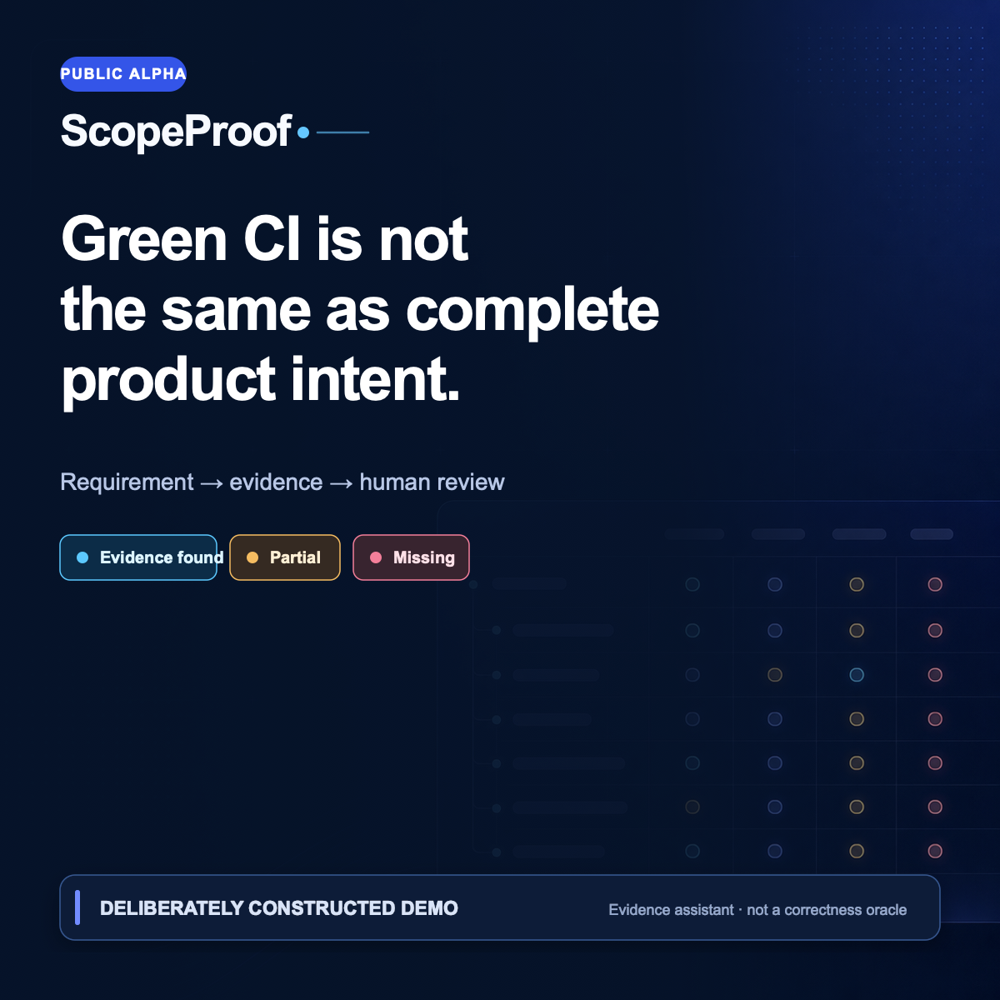

Confirm intent
Load a public PR without executing its code. Explicitly confirm normalized criteria before analysis.
Local-first · deterministic · public PRs only
Keep confirmed requirements, exact-head evidence and recorded decisions together. Share the report offline, then revisit it when the work changes.
Published evaluation download: v0.2.7, with publicly verified wheel, source archive and checksums in its Release entry. Release source: 0.2.7 at e099679. See all evaluation releases for earlier versions.
Evidence assistant, not a correctness oracle. ScopeProof does not execute pull-request code, replace QA, or turn static evidence into runtime verification.

Earlier constructed visual; Stage 1 is closed.
The v0.2.7 evaluation workflow
Load a public PR without executing its code. Explicitly confirm normalized criteria before analysis.
See exact-head static candidates, missing evidence and unresolved file scope. Candidates do not prove execution.
Save reviewer decisions and reasons with their history. Recorded identities and runtime statements are assertions, not authenticated proof.
A recipient can open the HTML report offline without installing ScopeProof. Transfer the complete saved record to continue in another local workbench.
Reopen saved work, inspect recorded history and compare eligible analyses or requirements. Changed criteria need fresh confirmation; earlier decisions are not carried forward.
Earlier constructed coverage walkthrough
This is a deliberately constructed demo case. ScopeProof uses deterministic evidence rules and human review; it does not guarantee correctness or replace QA.
This earlier 60-second recording does not demonstrate the complete saved-review lifecycle. Use the current evaluation guide for saving, offline handoff and revisiting.
Bounded evaluation
ScopeProof is an acceptance-coverage assistant, not an AI code reviewer or correctness oracle. Stage 1 is closed as not pursued, with every external-evidence count at zero. Owner-led Stage 2 maintains a bounded engineering reference product. Stage 3 is dormant and gated. No paid product or billing is active.
Evaluation downloads require no public case, qualifying review, or participant feedback. Optional design-partner discovery remains inactive until separately authorized; a download does not authorize outreach or establish customer validation.
Likes, views, stars, impressions, downloads, constructed demos, and automated checks are not product validation.
In the archived or separately authorized participant path, genuine feedback requires a completed review and a participant-selected outcome: a useful previously unknown gap, already-known information, or material product friction. Incomplete reviews receive no completed-review credit. Alpha feedback remains an explicit local opt-in; Standard reviews create no research record.
Include the version or commit, minimal reproduction, and expected and actual behavior. Submit no private code, credentials, customer data, private links, or confidential information. Use private vulnerability reporting for security concerns.